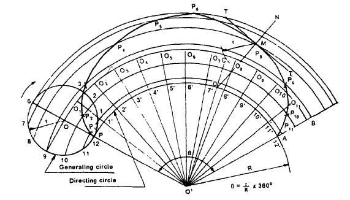
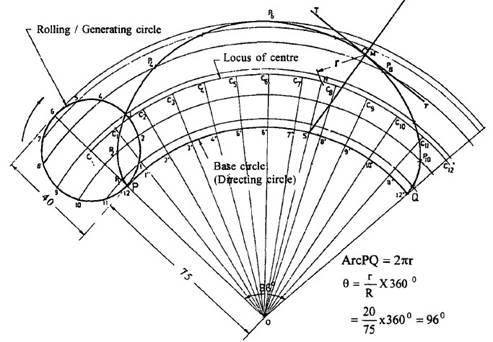

EPICYCLOID:
An epi-cycloid is a curve traced by a point on the circumference of a generating circle, when it rolls without slipping on another circle (directing circle) outside it.
· To draw an epi-cyloid, given the radius 'r' of the generating circle and the radious 'R' of the directing circle.
Construction:
1. With centre O' and radius R, draw a part of the directing circle.
2. Draw the generating circle, by locating the centre O of it, on any radial line O' P extended such that OP = r .
3. Assuming P to be the generating point, locate the point, A on the directing circle such that the arc length PA is equal to the circumference of the generating circle. The angle subtended by the arc PA at O' is given by = <PO'A = 3600 x rlR.
4. With centre O' and radius O'O , draw an arc intersecting the line O'A produced at B. The arc OB is the locus of the centre of the generating circle.
5. Divide the arc PA and the generating circle into the same number of equal parts and number the points.
6. Join O'-1', O'-2', etc., and extend to meet the arc OB at 01,02 etc.
7. Through the points 1,2,3 etc., draw circular arcs with O' as centre.
8. With centre O1 and radius r, draw an arc intersecting the arc through 1 at P1.
9. Similarly, locate the points P2, P3 etc.
10. A smooth curve through the points P1,P2,P3 etc., is the required epi-cycloid.

Figure
§Draw an epicycloid of rolling circle of diameter 40 mm which rolls outside another circle (base circle) of 150 mm diameter for one revolution. Draw a tangent and normal at any point on the curve.

Figure